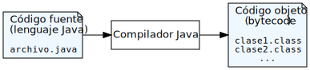
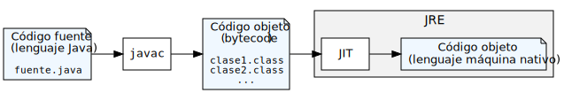

Introducción a la tecnología Java
Ricardo Pérez López
IES Doñana, curso 2020/2021
1 Introducción
1.1 Historia
Java es un lenguaje creado en 1995 por James Gosling en la empresa Sun Microsystems.
La versión 1.0 se publicó en enero de 1996.
Desde 2002, la evolución del lenguaje ha sido regulada por el JCP (Java Community Process).

El 13 de noviembre de 2006, Sun publicó gran parte de la tecnología Java como software libre, bajo los términos de la Licencia Pública General GNU (GPL).
En 2010, Oracle Corporation compra Sun Microsystems, por lo que Java pasa a formar parte de Oracle.
1.2 Versiones
| Versión | Publicación |
|---|---|
| JDK Beta | 1995 |
| JDK1.0 | 23-ene-1996 |
| JDK 1.1 | 19-feb-1997 |
| J2SE 1.2 | 8-dic-1998 |
| J2SE 1.3 | 8-may-2000 |
| J2SE 1.4 | 6-feb-2002 |
| J2SE 5.0 | 30-sep-2004 |
| Java SE 6 | 11-dic-2006 |
| Java SE 7 | 28-jul-2011 |
| Versión | Publicación |
|---|---|
| Java SE 8 | 18-mar-2014 |
| Java SE 9 | 21-sep-2017 |
| Java SE 10 | 20-mar-2018 |
| Java SE 11 | 25-sep-2018 |
| Java SE 12 | 19-mar-2019 |
| Java SE 13 | 17-sep-2019 |
| Java SE 14 | 17-mar-2020 |
| Java SE 15 | 15-sep-2020 |
1.3 Características principales
Los cinco objetivos principales que se plantearon al diseñar el lenguaje Java, y que a día de hoy siguen siendo sus características principales, son:
Debe ser sencillo, orientado a objetos y basado en una sintaxis conocida.
Debe ser robusto y seguro.
Debe ser portable e independiente de la arquitectura, permitiendo la ejecución de un mismo programa en varios sistemas operativos.
Debe ejecutarse con gran rendimiento.
Debe ser interpretado, multihilo y de enlace dinámico.
2 La tecnología Java
2.1 Máquinas reales vs. virtuales
Una máquina abstracta es una máquina diseñada independientemente de una determinada tecnología de fabricación.
Su finalidad no es la de ser construida, sino servir como modelo de computación teórica.
Una máquina virtual es una máquina emulada mediante hardware o software.
Las máquinas virtuales pueden ser emulaciones de máquinas reales o abstractas.
2.2 Código objeto (bytecode )
El compilador de Java traduce el código fuente (archivos con extensión
.java) en código objeto (código binario almacenado en archivos con extensión.class) para una máquina virtual llamada Java Virtual Machine (JVM).Al código objeto generado por el compilador de Java se le denomina bytecode.
Por tanto, el bytecode es el lenguaje máquina al que compila el compilador de Java y es, además, el único lenguaje que entiende la JVM.

2.3 La plataforma Java
La plataforma Java es el nombre de una plataforma de desarrollo y ejecución de programas que se compone de un amplio abanico de tecnologías:
La especificación de:
- El lenguaje de programación Java.
- La biblioteca estándar de Java.
- La máquina virtual de Java (Java Virtual Machine (JVM)).
La implementación, que se reparte en:
- El Java Runtime Environment (JRE): implementa la JVM y la biblioteca estándar.
- El Java Development Kit (JDK): implementa las herramientas de desarrollo y el lenguaje Java.
Para poder desarrollar y ejecutar programas Java, necesitamos una implementación de la plataforma Java que funcione en nuestro sistema operativo y nuestra arquitectura hardware.
Existen cuatro ediciones distintas de la plataforma Java (cuatro «plataformas Java»), centradas en diferentes entornos de aplicaciones y segmentando mucha de sus API.
Las plataformas son:
Java Card: para tarjetas inteligentes.
Java Platform, Micro Edition (Java ME): para entornos con recursos limitados.
Java Platform, Standard Edition (Java SE): para entornos de estaciones de trabajo.
Java Platform, Enterprise Edition (Java EE): para grandes empresas o entornos de Internet.
2.3.1 La máquina virtual de Java (JVM)
La máquina virtual de Java (del inglés, Java Virtual Machine o JVM) es una máquina virtual capaz de interpretar y ejecutar instrucciones expresadas en un código binario especial llamado bytecode, el cual es generado por el compilador del lenguaje Java, entre otros.
El bytecode de Java no es un lenguaje de alto nivel, sino un verdadero código máquina de bajo nivel, viable incluso como lenguaje de entrada para un microprocesador físico.
La gran ventaja de usar la JVM es la portabilidad, de manera que se han creado diferentes implementaciones de la misma máquina virtual para diferentes arquitecturas, y, así, un código objeto (archivo
.class) puede ser ejecutado en cualquier sistema operativo y arquitectura hardware que disponga de una implementación de la máquina virtual.
- La regla máxima del diseño de Java es:
«Escríbelo una vez, ejecútalo en cualquier parte.»
«Write once, run anywhere.»
La JVM puede estar implementada en software, hardware, una herramienta de desarrollo o un navegador web.
Lee y ejecuta código bytecode independiente de la plataforma en la que está implementada la JVM.
La JVM proporciona definiciones para un conjunto de instrucciones, un conjunto de registros, un formato para archivos de clases, la pila, un montículo con recolector de basura y un área de memoria.
La definición detallada de la JVM está especificada mediante un estándar.
Por tanto, toda implementación de la JVM debe cumplir con la especificación.
2.3.2 La API de Java
Una API (Application Programming Interface) define un conjunto de funcionalidades recogidas en funciones y/o métodos que ofrece una determinada biblioteca para ser utilizado como una capa de abstracción por otro software o por el programador de un lenguaje.
Los sistemas operativos ofrecen servicios para simplificar la tarea de programación.
Esos servicios se ofrecen en forma de un conjunto de bibliotecas dinámicas que las aplicaciones pueden llamar cuando lo necesiten.
Como la plataforma Java está pensada para ser independiente del sistema operativo subyacente, las aplicaciones no pueden apoyarse en servicios ofrecidos por cada sistema en concreto.
Por tanto, lo que hace la plataforma Java es ofrecer una biblioteca estándar que contiene mucha de las funciones disponibles en los sistemas operativos actuales.
Esa biblioteca es accesible desde Java a través de la API de Java.
Por tanto, la API de Java especifica el contenido de esa biblioteca, que ofrece sus servicios en forma de clases y otros elementos relacionados (como interfaces).
La documentación del API de la versión 14 de la plataforma Java Standard Edition (Java SE) se encuentra bajo la siguiente dirección:
https://docs.oracle.com/en/java/javase/14/docs/api/index.html
Allí podemos comprobar que el API de Java SE está dividido en módulos, que a su vez se dividen en paquetes, que a su vez se dividen en clases e interfaces.
Es fundamental tener siempre a mano la documentación de la API para poder programar con agilidad en este lenguaje.
La biblioteca de Java tienen tres funciones principales dentro de la plataforma Java:
Ofrecen al programador un conjunto bien definido de funciones para realizar tareas comunes, como manejar listas de elementos u operar de forma sofisticada sobre cadenas de caracteres.
Proporcionan una interfaz abstracta para tareas que son altamente dependientes del hardware de la plataforma destino y de su sistema operativo.
No todas las plataformas soportan todas las funciones que una aplicación Java espera. En estos casos, las bibliotecas bien pueden emular esas funciones usando lo que esté disponible, o bien ofrecer un mecanismo para comprobar si una funcionalidad concreta está presente.
2.4 Las herramientas de desarrollo de Java (JDK)
Las herramientas de desarrollo de Java (del inglés, Java Development Kit o JDK) constituyen el software necesario para desarrollar programas Java.
Contiene:
Un compilador (
javac) que traduce código Java a bytecode.Una copia completa del JRE.
Otras herramientas de desarrollo: un generador de documentación, un empaquetador de archivos
.jar, un desensamblador de archivos.class, un depurador, el intérprete interactivojshell…
A lo largo de los años han ido saliendo varios JDK que cumplen con las especificaciones de Java pero que se diferencian en aspectos muy concretos: licencia, técnicas de optimización, recolección de basura…
El principal JDK usado a día de hoy es OpenJDK.
OpenJDK es una implementación gratuita y libre de la plataforma Java SE, publicada bajo la licencia GNU GPL versión 2 basada en la máquina virtual HotSpot desarrollada inicialmente por Sun.
OpenJDK es la implementación oficial de referencia para Java SE desde la versión 7.
OpenJDK es el resultado de la decisión que tomó Sun en 2006 de hacer que Java fuese software libre (al principio no lo era). Desde entonces, a lo largo de los años se han ido liberando partes de la plataforma hasta que, finalmente, desde diciembre de 2010 todos los componentes del JDK son libres.
2.4.0.1 Instalación
Instalación en Ubuntu:
Ejecutar los siguientes comandos desde un terminal del sistema operativo:
Instalación en Windows:
Visitar https://adoptopenjdk.net, descargar e instalar la versión adecuada a la versión de Windows que se está usando.
2.4.1 El compilador javac
El programa
javaces el compilador que traduce el código fuente escrito en lenguaje Java (y almacenado en archivos.java) a bytecode almacenado en archivos.class.Por cada clase definida en el archivo fuente, el compilador generará un archivo
.classcon el código objeto en bytecode generado para esa clase.El código objeto se almacena en archivos con extensión
.classporque la mayoría de los archivos.javacontienen definiciones de clases escritas en lenguaje Java.
Un programa Java está formado por uno o varios archivos fuente
.javaque contienen, cada uno de ellos, una o varias definiciones de clases (salvo excepciones).En Java, prácticamente todas las instrucciones que forman un programa están contenidas en clases.
Por tanto, la ejecución de un programa Java empezará siempre desde una clase concreta, llamada clase principal.
Más adelante veremos que la clase principal no puede ser cualquier clase. Tiene que ser una que tenga definido un método, llamado método principal, que debe tener una determinada signatura que ya veremos.
La compilación de un archivo fuente puede provocar la compilación en cascada de otros archivos fuente si el primero hace uso de elementos definidos en los otros.
Por eso, para compilar un programa Java, lo más conveniente es compilar el archivo fuente que contiene la clase principal, ya que ello provocará la compilación en cascada de cualquier archivo fuente de la que dependa ésta.
Para compilar un archivo fuente
.java, debemos pasarle al compiladorjavacel nombre de dicho archivo.Por ejemplo, si tenemos un archivo fuente
Principal.javaque contiene la definición de la clasePrincipal, podemos compilarlo conjavacy generar con ello el archivoPrincipal.classcon el código objeto en bytecode.Para ello, pasamos a
javacel nombre del archivo fuente a través de la línea de órdenes:
Si el archivo objeto
.classque va a generar el compilador ya existe (normalmente, como consecuencia de una compilación anterior), el nuevo archivo machacará al que ya existe con el mismo nombre:Si el archivo fuente
Principal.javacontiene varias definiciones de clases, se generará un.classpor cada una de ellas.Lo más habitual es que cada definición de clase vaya en un archivo fuente separado, con el mismo nombre que el de la clase.
Esta norma se convierte en obligatoria si alguna clase está marcada como
public, como veremos luego.
2.4.2 El intérprete interactivo jshell
Desde la versión Java 9, el JDK incorpora un intérprete interactivo llamado
jshellque funciona de forma similar al intérprete interactivo de Python.Al igual que el de Python, ese intérprete actúa siguiendo el esquema REPL (Read, Print, Eval, Loop).
Nos permite hacer experimentos en tiempo real, comprobar el resultado de evaluar expresiones o de ejecutar sentencias.
Se arranca con la orden
jshelly se sale de él conCtrl+D:
2.5 El entorno de ejecución de Java (JRE)
El entorno de ejecución de Java (del inglés Java Runtime Environment o JRE) es el software necesario para ejecutar programas Java en un determinado sistema operativo y arquitectura hardware.
Para cada dispositivo (ya sea un teléfono móvil, un PC con Linux o un microondas) debe haber un JRE.
El JRE actúa como intermediario entre Java y el sistema operativo.
Básicamente, consiste en una implementación de la JVM y de la biblioteca estándar (el API).
Ambas (JVM y API) deben ser compatibles entre sí, de ahí que sean distribuidas conjuntamente en forma de JRE.
JRE = JVM + API
El JRE actúa como un emulador de la JVM y un intérprete de bytecode.
El JRE lee el código objeto (los archivos
.class) y va ejecutando (interpretando) paso a paso las instrucciones compiladas en bytecode que se va encontrando.
- Desde hace ya tiempo, el JRE lleva a cabo un proceso previo de compilación Just In Time (JIT), que convierte el bytecode a código nativo de la arquitectura donde se está ejecutando el JRE. Esto permite una ejecución mucho más rápida a costa de perder algo de tiempo al arrancar el programa.

2.5.1 El intérprete java
El programa
javaes el intérprete que implementa la JVM en el JRE.Es el programa que usamos para cargar y ejecutar los programas compilados a bytecode almacenados en archivos
.class.Como su extensión indica, un archivo
.classcontiene generalmente la definición de una clase Java compilada en bytecode.En Java, las instrucciones que forman un programa están prácticamente todas contenidas en clases. Por tanto, la ejecución de un programa Java empezará siempre desde una clase concreta, llamada clase principal, el cual debe contener el método principal.
Para ejecutar un programa Java, debemos pasarle al intérprete
javael nombre de la clase principal.No es necesario disponer de los archivos fuente
.javapara ejecutar un programa Java; sólo el código objeto almacenado en los.class.
Por ejemplo, si tenemos una clase
Principalcompilada en el archivoPrincipal.class, podemos indicar que queremos empezar desde ahí la ejecución de nuestro programa:El intérprete
javaarrancaría la JVM, cargaría el archivo.classen memoria y comenzaría su ejecución desde el método principal.Si no encuentra al método principal en esa clase, dará un error.
Es importante no confundir el nombre de la clase con el nombre del archivo que contiene el código compilado de la clase. En este caso, el nombre de la clase es
Principal, noPrincipal.class:
El programa empezaría a ejecutarse a partir de dicha clase, suponiendo que es válida como clase principal (es decir, que contiene al método principal).
Ya sabemos que «ejecutar un programa Java» consiste en hacer que el intérprete
javavaya ejecutando las instrucciones que forman el programa, emulando el funcionamiento de la máquina virtual de Java.Si durante la ejecución del programa se necesita acceder a una clase cuyo código objeto se encuentra en otro archivo
.class, el intérpretejavabuscará ese archivo.classy lo cargará en la JVM.Para localizar los archivos
.class, el intérpretejavamira en el directorio actual mientras no se diga lo contrario.Si los archivos
.classse encuentran en otro sitio, debemos indicarlo usando el classpath.
El classpath es una lista de directorios separados por «
:» que representa las rutas en las que el intérprete debe buscar los archivos.class.En el classpath se indican las rutas en el orden en el que se desea que busque el intérprete, ordenados por preferencia.
Por ejemplo, el siguiente classpath:
/usr/lib/java:/usr/java:/tmpestá formado por tres rutas, que se consultarían en el siguiente orden:
Primero se miraría si el archivo
.classbuscado se encuentra en/usr/lib/java.Si no está ahí, entonces se buscaría en
/usr/java.Si ahí tampoco está, entonces se buscaría en
/tmp.Si tampoco está ahí, el intérprete daría un error y finalizará la ejecución del programa.
Para indicar al intérprete qué classpath se desea usar, se pueden usar dos técnicas:
Usar la opción
-cpdel programajava:Crear y exportar la variable de entorno
CLASSPATHdel sistema operativo:
3 El primer programa Java
3.1 El primer programa Java
/*
* ¡Hola, mundo!
*/
public class Principal {
public static void main(String[] args) {
System.out.println("Hola"); // Imprime "Hola"
}
}Suponiendo que ese código se escribe en un archivo llamado
Principal.java, para compilarlo desde un terminal del sistema operativo podemos hacer:lo que creará (o actualizará, si ya existía) un archivo
Principal.classcon el bytecode de la clasePrincipal.Ahora ya podemos ejecutar el programa haciendo:
Los comentarios que ocupan una sola línea van desde
//hasta el final de la línea.Los comentarios que ocupan varias líneas se encierran entre
/*y*/.En Java no existen funciones: todos son métodos.
Las sentencias simples en Java deben acabar siempre en
;.Las sentencias deben pertenecer a un método. Fuera de un método sólo puede haber declaraciones y directivas para el compilador.
Por tanto, en cada programa debe existir, al menos, una clase.
La estructura del programa se define mediante bloques delimitados por las llaves
{y}, que son sentencias compuestas y no acaban en;.Para acceder a un miembro de un objeto o clase, se usa el operador punto (
.).
3.2 Tipado estático vs. dinámico
Java es un lenguaje de tipado estático, a diferencia de Python donde el tipado es dinámico.
Por tanto, en Java hay que declarar el tipo de todos los valores que se van a usar en el programa:
Variables (incluyendo los campos de las clases).
Parámetros de los métodos.
Valores de retorno de los métodos.
En Python, las variables empiezan a existir en cuanto se les asigna un valor, pero en Java hay que declararlas antes de poder usarlas, por lo que empiezan a existir desde su declaración, aunque no se les haya asignado ningún valor.
En las declaraciones de variables, parámetros o valores de retorno, los tipos se indican antes del identificador correspondiente, no después.
3.3 El método main
Todo programa Java comienza su ejecución por un método (llamado método principal) que debe tener la siguiente signatura:
Por tanto, ese método:
Debe llamarse
main.Debe declararse como estático (usando la palabra clave
static).Debe tener un único parámetro llamado
argsde tipoString[](que significa «array de cadenas»).No debe devolver ningún valor (su tipo de retorno es
void).Debe definirse en la clase principal del programa.
Su visibilidad debe ser pública.
3.4 La clase principal
La clase principal del programa es aquella que contiene el método principal.
Las clases se definen con la palabra clave
class, seguida de su nombre y su definición (entre llaves{y}).Además, y aunque aquí no resulta estrictamente necesario, se recomienda marcar la clase principal como pública usando el modificador
public(en su momento veremos qué significa eso).En este caso, se debe cumplir que:
Esa clase sea la única clase pública que haya en el archivo fuente.
El nombre del archivo fuente debe coincidir exactamente con el de la clase (con la extensión
.java).
Siempre se recomienda que haya una única clase por cada archivo fuente y que el nombre de la clase y el de su archivo coincidan.
3.5 La clase System
La clase
Systemcontiene varios atributos útiles y que se utilizan con frecuencia en muchos programas Java.Todos sus miembros (tanto variables como métodos) son estáticos.
No se puede instanciar.
Entre las facilidades que ofrece la clase
Systemse encuentran:Los flujos de entrada estándar (
in), salida estándar (out) y salida estándar de errores (err).Acceso a propiedades definidas externamente y variables de entorno.
Un medio para cargar archivos y bibliotecas.
Un método para copiar rápidamente una parte de un array.
3.6 El paquete java.lang
Java agrupa las clases (y otros elementos que también veremos, como las interfaces) en unidades llamadas paquetes.
Los paquetes de Java actúan de forma similar a los módulos de Python y, por tanto, ayudan a la modularización del código.
Cuando una clase está definida dentro de un paquete, decimos que «pertenece al paquete» o que está «contenida en el paquete».
En tal caso, el nombre totalmente cualificado de la clase está formado por el nombre del paquete al que pertenece y el nombre de la propia clase, separados por un punto (
.), de la siguiente forma:⟨paquete⟩.⟨clase⟩A veces se denomina nombre corto al nombre de la clase sin la parte correspondiente al paquete al que pertenece (si pertenece a alguno).
Una clase A puede usar a otra clase B en cualquier momento mediante el nombre totalmente cualificado de B, aunque A y B pertenezcan a paquetes diferentes.
Si una clase A desea usar a otra clase B y ambas pertenecen al mismo paquete, podrá hacerlo sin tener que especificar el nombre totalmente cualificado de B, simplemente usando su nombre corto.
En cambio, si A y B pertenecen a paquetes distintos, hay dos opciones:
A debe indicar el nombre totalmente cualificado de B, o bien
A debe importar a B dentro del paquete de A usando la sentencia:
import⟨paquete⟩.⟨clase⟩;
Los paquetes de Java no se importan como tales, sino sólo sus miembros, de forma similar a lo que ocurre en Python cuando usamos la sentencia
from ... import.
La clase
Systempertenece a un paquete llamadojava.lang.Por tanto, el nombre totalmente cualificado de la clase
Systemesjava.lang.System.El paquete
java.langes especial por dos motivos:Proporciona clases que son fundamentales en el lenguaje Java, como por ejemplo:
Object: es la raíz de la jerarquía de clases.Class: representa a las clases en tiempo de ejecución.Math: proporciona funcionalidades matemáticas comunes.String: representa las cadenas de caracteres.
No es necesario importar explícitamente ninguno de sus miembros, ya que todos sus miembros son importados automáticamente.
3.7 El objeto out
El objeto
outrepresenta el flujo de salida estándar del programa.Ese flujo ya está abierto y listo para aceptar datos de salida.
Normalmente, ese flujo está conectado a la pantalla.
outes una instancia de la clasePrintStream, la cual define qué métodos se pueden invocar sobre ese objeto.outes un miembro estático de la claseSystem.Por tanto, para acceder a él tenemos que usar el operador punto (
.) a partir del nombre de la clase:
3.8 El método println
El método
printlnestá definido en la clasePrintStreamy, por tanto, se puede invocar sobre el objetoout.Ese método sirve para imprimir un valor por la salida, seguido de un salto de línea:
Equivale aproximadamente a la función
printde Python.